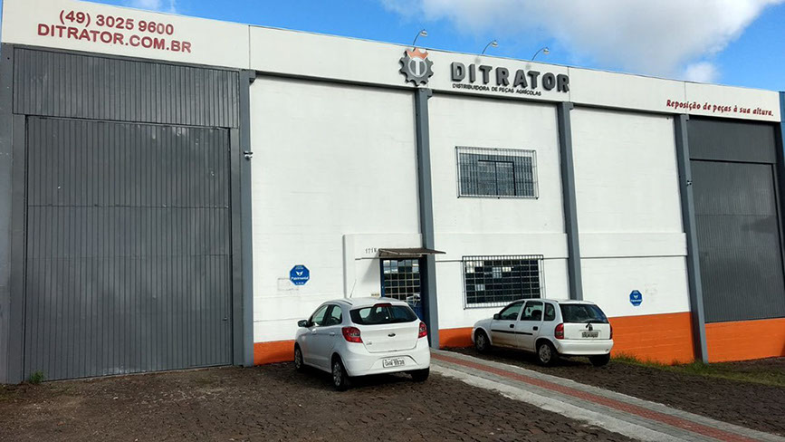

quem somos?
ITENS
ANOS
ESTADOS ATENDIDOS
CLIENTES SATISFEITOS
A DITRATOR
Fundada em 1992 em Curitiba , a DITRATOR é uma distribuidora de peças para tratores agrícolas e motores diesel. Atualmente com sede em Pinhais/PR e filiais em Chapecó/SC e Canoas/RS atende todo o Brasil, sendo uma das principais referencias em peças agrícolas na região sul. Possui um amplo estoque, contando atualmente com mais de 20 mil itens disponíveis das mais diversas marcas, com preços competitivos e de qualidade. Além disso, a equipe de profissionais é altamente capacitada, a fim de prestar um atendimento com qualidade e agilidade, buscando sempre a excelência. As peças de reposição para os principais tratores e motores diesel do mercado estão aqui: Massey Ferguson, Valtra/Valmet, New Holland/Ford, John Deere, MWM, Perkins, Mercedes, Cummins, Volvo, Scania e outras.
MISSÃO:
“Oferecer o melhor serviço de distribuição de peças agrícolas e para motores diesel, com atendimento especializado, visando a satisfação do cliente.”
VISÃO:
“Ser referência em reposição de autopeças agrícolas e para motores diesel na região Sul do Brasil.”
VALORES
QUALIDADE . PARCERIA . RESPEITO . AGILIDADE . TRANSPARÊNCIA
CERTIFICAÇÃO
Em uma pesquisa realizada pelo INSTITUTO DATACENSO no ano de 2016, a DITRATOR foi qualificada como TOP of MIND e TOP of HEART do Paraná, e esteve sempre presente entre as 3 principais distribuidoras do Sul do País ao longo da pesquisa. Além disso, a DITRATOR obteve um índice geral de satisfação (IGS) de 98% .

Matriz - PINHAIS/PR
Centro de Distribuição - CHAPECÓ/SC

Centro de Distribuição - CANOAS/RS

Centro de Distribuição - CASCAVEL/PR